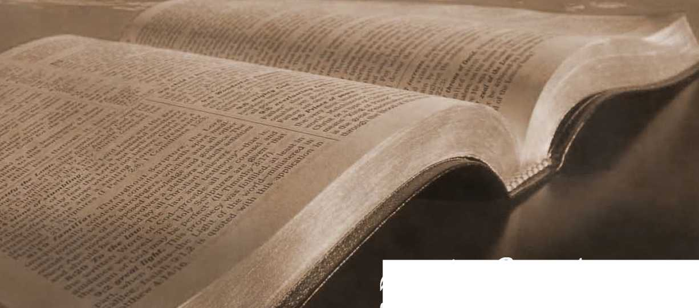

No. 40—What Is the Soul?
pibte Students
1898
or 1) THE O L O G r UA R TH R L R.
No, 40.—JANUARY^ 1898.
ENTERED AT THE POST OITTCE, ALLEGHENY, PA.
SAMPLE FREE.! SUBSCRIPTION ■"(ICE, SIX CENTS PER YEAR—48 PAGES.
COME one will possibly say, Ah 1 No one believes 'n the immortality of the body. Everybody knows inat the body dies, that it needs resupply continually and that hence it cannot be immortal. But the Scriptures speak of souls. May it not be that the soul is indestructible?—that God having made a soul cannot destroy it ?
Reason tells us that, unless there is absolute proof to the contrary, the life of every creature is subjeCt to the will of the Creator. Now notice that the Scriptures nowhere speak of the immortality of the soul as some people seem to suppose—neither in the translations nor in the original text. Take a Concordance and try to find the expression “ immortal soul," and thus you can quickly convince yourself that no such expression is found in the Scriptures. On the contrary, the Scriptures declare that ‘‘ God is able to destroy both soul and body and again, “the soul that sin-neth, it shall die.' ’ As we have already seen* that which can die, which can be destroyed, is not immortal, is not proof against death, destruction. Hence the Scriptures cited prove that neither souls nor bodies are immortal.
What, then, is the soul?
The general idea of the soul is that it is an indefinable something in us, but v7,rtt it is or where it is located few
Tract The Hope of Immortality. Sample copy free on application. Watch Tower Bible and ’Iract Society, Allegheny, Pa. attempt to explain. This unknown something is claimed to be the real, intelligent being, while the body is merely its house or tool. A Methodist bishop once defined a soul, thus: “ It is without interior or exterior, without body, shape or parts, and you could put a million of them into a nutshell;”—a very good definition of nothingsso. should say!
The body is not the soul, as some affirm: this is proved by our Lord’s statement that “ God is able to destroy both soul and body.” And now, in view of the foregoing, if our minds be freed from prejudice, we ought to be able to learn something further on this subject by examining the inspired record of man’s creation. Turning to Genesis 2:7, we read:—
“And the Lord God formed man of the dust of the ground, and breathed [Heb. blew\ into his nostrils the breath [Heb. windy of life [Heb. lives plural—i. e., such as was common to all living animals]; and man became a living soul [i. e., a sentient being].”
From this account it appears that the body was formed first, but it was not a man, soul or being, until animated. It had eyes, but saw nothing; ears, but heard nothing; a mouth, but spoke nothing ; a tongue, but no taste; nostrils, but no sense of smell; a heart but it pulsated not; blood, but it was cold, lifeless; lungs, but they moved not. It was not a man, but a corpse, an inanimate body.
The second step in the process of man’s creation was to give vitality to the properly “ formed ” and in every way prepared body; and this is described by the words “blew into his nostrils the breath of life.” When a healthy person has been drowned and animation is wholly suspended, resuscitation has, it is said, been effected by working thearms and thus the lungs as a bellows, ctldi so gradually establishing the breath in the nostrils. In Adam’s case it of course required no labored effort on the part of the Creator to cause the perfect organism which he had made to breathe the life-giving oxygen of the atmosphere.
As the vitalizing breath entered, the lungs expanded, the blood corpuscles were oxygenized and passed to the heart, whose valves in turn propelled them to every part of the body, awakening all the prepared, but hitherto dormant, nerves to sensation and energy. In an instant the energy reached the brain, and thought, perception, reasoning, looking, touching, smelling, feeling and tasting commenced. That which was a lifeless human organism had become a man, a sentient being: the “ living soul” condition mentioned in the text had been reached. In other words, the term “living soul ” means neither more nor less than the term “sentient being;” i. e., a being capable of sensation, perception, thought. .
Moreover, even though Adam was perfect in his organism, it was necessary for him to sustain life, soul or sentient being, by partaking of the fruits of the trees of life. And when he sinned, God drove him from the garden, “ lest he put forth his hand, and take also of the tree [plural trees or grove\ of life, and eat, and live forever [i. e., by eating continuously].” (Gen. 3 122.) How the fogs and mysteries scatter before the light of truth which shines from God’s Word !
Thus, also, we see why it is that the Scriptures speak of “souls” in connection with the lower animals. They, as well as man, are sentient beings or creatures of intelligence, only of lower orders. They, as well asr man, can see, hear, feel, taste and smell; and each can reason up to the standard of his own organism, though none can reason as abstrusely nor on as high a plane as man. This difference is not because man has a different kind of life from that possessed by the lower animals; for all have similar vital forces, from the same fountain or source of life, the same
Creator; all sustain life in the same manner, by the digestion of similar foods, producing blood and muscles, and bones, etc., each according to his kind or nature; and each propagates his species similarly, bestowing the life, originally from God, upon his posterity. They differ in shape and in mental capacity.
Nor can it be said that while man is a soul(y>T intelligent being) beasts are without this soul-quality or intelligence, thought, feeling. On the contrary, both man and beast have j^zzZ-quality or intelligent, conscious being. Not only is this the statement of Scripture, but it is readily discernible as a fadt, as soon as the real meaning of the word soul is comprehended, as shown foregoing. To illustrate: suppose the creation of a perfedt dog; and suppose that creation had been particularly described, as was Adam’s, what difference of detail could be imagined? The body of a dog created would not be a dog until the breath of life would be caused to energize that body;—then it would be a living creature with sensibilities and powers all its own—a living soul of the lower order, called dog, as Adam, when he received life, became a living creature with sensibilities and powers all his own—a living soul of the highest order of flesh beings, called man.
If the great difference between man and beast is not in the life which animates both, and not from lack of soulpower which both possess, can it be that the difference is in their bodies? Yes ; assuredly, the natural difference-is physical, in addition to which is the fadt that God has made provision for man’s future, as expressed in his promises, while no such provision for a future life is made for beasts —nor are they organically capable of appreciating metaphysics. Other things being equal, the size and weight of the brain indicates capacity and intelligence. In this respedt man has been more highly endowed than the brute, by the Creator. The brute has less brains than man, and what it has belongs almost exclusively to the selfish propensities. Its highest conception of right and wrong is the will of its master, man; it cannot appreciate L ^uulimein morals or in nature : the Creator did not give it a brain-capacity for such things.
But altho, because of his fall into sin and death, man’s condition is far from what it was in its original perfection when pronounced “ very good” by the highest Judge;—so that some, by the cultivation of the lower organs of thought and a failure to use the higher, intellectual faculties, have dwarfed the organs of the brain representing these higher faculties, yet the organs are still there, and are capable of development, which is not the case with the most nearly perfect specimens of the brute creation. So then it. is in that the Creator has endowed man with a higher and finer organism, that he has made him to differ from the brute. They have similar flesh and bones, breathe the same air, drink the same water, and eat similar food, and all are souls or creatures possessing intelligence ; but man, in his better body, possesses capacity for higher intelligence and is treated by the Creator as on an entirely different plane. It is in proportion as sin degrades man from his original likeness of his Creator that he is said to be “ brutish ”—more nearly resembling the brutes, destitute of the higher and finer sensibilities.
To this the Scripture testimony agrees. We read (Gen. 1 130) “To you it shall be for meat, and to every beast of the earth, and to every fowl of the air, and to everything that creepeth upon the earth, wherein there is life [Heb. “nefihesh ehaiyah"—a living soul]. Again (Gen. 1:20) “Let the waters bring forth the moving creature that hath life [Heb.—a living soul].”—See marginal readings.
The same lesson,—that the life principle is no different in mankind from what it is in all other creatures whose breath is taken through the nostrils, as distinguishing them from fish,—is taught in the account of the destruction wrought by the Deluge. (Gen. 6:17; 7:15,22.) This is in full accord with King Solomon’s statement that man and beast have all “one breath” [Heb. ruach, spirit of life]—one kind of life; and that “as the one dieth, so dieth the other.” (Eccl. 3:19.) When he asks (Eccl. 3: 21), “Who knoweth the spirit of man that [it] goeth upward, and the spirit of the beast that [it] goeth downward to the earth?” he is controverting the heathen theory, which even at that time had begun to speculate that man had some inherent quality which would prevent his death, even when he seemed to die. The wise man challenges any proof, any knowledge, to such effeCt. This challenge to others to produce proofs, or admit that they have no such knowledge, follows his statement of the truth on the subjeCt in verses 19 and 20.
The distinction between man ana beast is not in the kind of breath or life, but in that man has a higher organism than other animals; possessing moral and intellectual powers and qualities in the image or likeness of those possessed by the Creator, who has a still higher organism, of spirit, not of flesh. And, as already shown, man’s hope for a future life lies not in his inherent powers, but in his Creator’s gracious provision which centered in the redemption of every soul of man from death, by the great Redeemer, and the consequent provision that whosoever will may have everlasting life by resurrection, subject to the terms of the New Covenant.
Our Redeemer “poured out his soul [being] unto death,” li he made his soul [being] an offering for sin” (Isa. 53: 12, 10) ; and it was the soul of Adam (and his posterity) that he thus bought with his precious blood—by making his soul (being) an offering for sin. Consequently it rs souls that were redeemed, and that are to be awakened, resurrected.
Many suppose that the bodies buried are to be restored atom for atom, but, on the contrary, the Apostle declares, (1 Thou sowest [in death] not that body which shall be.” In the resurrection God will give to each person (to each soul or sentient being) such a body as his infinite wisdom has been pleased to provide; to the Church, the “ bride” selected in this age, spirit bodies; to the restitution class, human bodies, but not the same ones lost in death.1— i Cor. 15:37, 38.
As in Adam’s creation, the Clinging together of an organism and the breath of life produced a sentient being or soul, so the dissolution of these, from any cause, puts an end to sentient being,—stopping thoughts and feelings of every kind. The soul ( i. e., sentient being) ceases; the body returns to dust as it was; while the spirit or breath of life returns to God, who imparted it to Adam, and to his race through him. (Eccl. 12:7.) It returns to God in the sense that it is no longer amenable to human control, as in pro-creation, and can never be recovered except by divine power. Recognizing this faCt, the Lord’s instructed ones commit their hope of future life by resurrection to God and to Christ his now exalted representative. (Luke 23:46; ACts 7:59-) So, then, had God made no provision for man’s future life by a ransom and a promised resurrection, death would have been the end of all hope for humanity.—1 Cor. 15:14-18.
But God has thus made provision for our living again; and ever since he made known his gracious plan, those who speak and write intelligently upon the subjeCt (for instance, the inspired Scripture writers), as if by common consent, speak of the unconscious interim between death and the resurrection morning, in which sentient being is suspended, as a “ sleepy Indeed, the illustration is an excellent one; for the dead will be totally unconscious of the lapse of time, and the moment of awakening willseem to them like the next moment after the moment of their dissolution. For instance, we read that speaking of Lazarus’ death our Lord said, “Our friend Lazarus sleepeth, I go that I may awake him out of sleep." Afterward, because the disciples were slow to comprehend, he said, “Lazarus is dead.” (John ii :n.) Were the theory of consciousness in death correct, is it not remarkable that Lazarus gave no account of his experience during those four days ? None will claim that he was in a “ hell ” of torment, for our Lord calls him his “friend;” and if he had been in heavenly bliss our Lord would not have called him from it, for that would have been an unfriendly aCt. But as our Lord expressed it, Lazarus slept, and he awakened him to life, to consciousness, to his sentient being, or soul returned or revived; and all this was evidently a favor greatly appreciated by Lazarus and his friends.
The thought pervades the Scriptures that we are now in the night of dying and sleeping as compared with the morning of awakening and resurrection. “Weeping may endure for a night, but joy cometh in the morning."—Psa 30:5.
The apostles also frequently used this appropriate, hopeful and peaceful figure of speech. For instance, Luke says of Stephen, the first martyr, 11 he fell asleep ; and in recording Paul’s speech at Antioch he used the same expression, “ David fell on sleep." (ACts 7:60; 13 :36.) Peter uses the same expression, saying, “The fathers fell asleep." (2 Pet. 3 : 4.) And Paul used it many times as the following quotations show :— •
“If her husband be dead [Greek fallasleep]' ’—1 Cor. 7:3g.
“ The greater part remain unto this present, but some are fallen asleep."—1 Cor. 15 :6.
“ If there be no resurrection, . . . then they also which 3x0fallen asleep in Christ are perished.”—1 Cor. 15 :13-18.
“ Christ is risen from the dead and become the first-fruits of them that slept."-—1 Cor. 15: 20.
“Behold, I show you a mystery, we shall not all sleep." —1 Cor. 15:51.
“I would not have you to be ignorant, brethren, concerning them that are asleep."-—1 Thes. 4:13.
“Them that sleep in Jesus, will God bring [from the dead] with [by] him.”—1 Thes. 4:14.
When the Kingdom, the resurrection time, comes, “we who are alive and remain unto the presence of the Cord shall not precede them that are asleep."-—1 Thes. 4:15.
They “ fell asleep” in peace, to await the Lord’s Day— the Day of Christ, the Millennial Day—fully persuaded that he [Christ] is able to keep that which they committed unto him against that day. (2 Tim. 1:12.) This same thought runs through the Old Testament as well—from the time that God first preached to Abraham the Gospel of a resurrection : the expression, “He slept with his fathers, ’ ’ is very common in the Old Testament. But Job puts the matter in very forcible language, saying, “Oh that thou wouldest hide me in the grave, that thou wouldest keep me secret until thy wrath be [over] past! ” The present dying time is the time of God’s wrath—the curse of death being upon all, because of the original transgression. However, we are promised that in due time the curse will be lifted and a blessing will come th’ ugh the Redeemer to all the families of the earth; an' >o Job continues, “All the days of my appointed time will I wait, until my change come; [then] thou shalt call (John 5 :25) and I will answer thee; thou shaltz have a desire unto the work of thine hands.” (Job 14:14, 15.) And we of the New Testament times read our Lord’s response, All that are in. the graves shall hear the voice of the Son of God [calling them to awake and come to a full knowledge of God and to a full opportunity of everlasting life].—John 5 125, 29.
Let us illustrate the human and animal body, soul and spirit by something less complex and better understood generally ; for instance,—an unlighted candle would correspond to an inanimate human body or corpse, the lighting of the candle would correspond to the spark of life originally imparted by the Creator; the flame or light corresponds to sentient being or intelligence or soul quality; the oxygenized atmosphere which unites with the carbon of the candle in supporting the flame corresponds to the breath of life or spirit of life which unites with the physical organism in producing soul or intelligent existence. If an accident should occur which would destroy the candle, the flame, of course, would cease; so if a human or animal body be destroyed, as by consumption or accident, the soul, the life, the intelligence, ceases.
Or if the supply of air were cut off from the candleflame, as by an extinguisher or snuffer, or by submerging the candle in water, the light would be extinguished even tho the candle remained unimpaired. So the soul, life, existence, of man or animal would cease if the breath of life were cut off by drowning or asphyxiation, while the body might be comparatively sound. As the lighted candle might be used under favorable conditions to light other candles, but the flame once extinguished the candle could neither relight itself nor other candles, so the human or animal body while alive, as a living soul or being can, under divine arrangement, start or propagate other souls or beings—-offspring : but so soon as the spark of life is gone, soul or being has ceased, and all power to think, feel or propagate has ceased. In harmony with this we read in the Scriptures of Jacob’s children: “All the souls that came out of the loins of Jacob were seventy souls." (Exod. 1:5.) Jacob received his spark of life as well as his physical organism, and hence the united product of these, his soul or intelligent being, from Isaac, and thence from Adam, to whom alone God ever direCtly imparted life. And Jacob passed on the life and organism and soul to his posterity, and so with all humanity.
A candle might be relighted by any one having the ability; but by divine arrangement the human body, bereft of the spark of life, “ wasteth away,” “returneth to the dust from which it was taken,” and the spark of life cannot be reenkindled except by divine power, a miracle. The promise of resurrection is therefore a promise of a relighting, a reenkindling of animal existence or soul; and since there can be no being or soul without a body and restored life-power or spirit, it follows that a promised resurrection or restoration of soul or being implies new bodies, new organisms. Thus the Scriptures assure us that human bodies which return to dust will not be restored, but that in the resurrection God will give such new bodies as it may please him to give.—1 Cor. 15 13 7-40.
The Apostle here declares that in the resurrection there will be a special class accounted worthy of a new nature, spiritual instead of human or fleshly: and, as we should expeCt, he shows that this great change of nature will be effected by giving these a different kind of body. The candle may here again serve to illustrate: suppose the
A ■
fleshly or human nature to be illustrated by a tallow candle, the new body might be illustrated by a wax candle of a brighter flame or indeed by an eleCtric arc-light apparatus.
With any power and wisdom less than that of our Creator guaranteeing the resurrection, we might justly fear some break or slip by which the identity would be lost, especially with those granted the great change of nature by a share in the first (chief) resurrection to spirit being. But we can securely trust this and all things to him with whom we have to do in this matter. He who knows our very thoughts can reproduce them in the new brains so that not one valuable lesson or precious experience shall be lost. He is too wise to err and to good to be unkind; and all that he has promised he will fulfil in a manner exceedingly abundantly better than we can ask or think.
The terms body, soul and spirit may be used of the Church collectively. For instance, the Apostle says : “I pray God [that] your whole spirit, soul and body be preserved blameless, unto the coming of our Lord Jesus Christ.” (i Thes. 5 123.) This prayer must be understood to apply to the Church as a whole—the eleCt church whose names are written in heaven. The true spirit has been preserved in the little flock. Its body is discernible to-day, also, notwithstanding the multitudes of tares that would hide as well as choke it. And its soul, its activity, its intelligence, its sentient being, is in evidence everywhere, lifting up the standard of the people—the cross, the ransom.
In no other way could we apply the Apostle’s words; for, however much people may differ respecting the preservation of the individual spirits and souls of the people addressed, all will agree that their bodies have not been preserved, but have returned to dust, like those of others. Besides, the words body, soul and spirit are in the singular, not in the plural.
“ALL LIVE UNTO HIM.”--LUKE 20:37, 38.
Our Lord in contradicting the Sadducees (who denied that there would be a resurrection or any future life), said that the resurrection (and hence a future life) was proved by the faCt that God, in speaking to Moses, declared him-
self the God of Abraham, Isaac and Jacob. Our Lord suggests that this of itself is a proof £ 1 that the dead are [to be] raised,” because God would surely not refer thus to beings totally and forever blotted out of existence. Our Lord then shows that God’s plan for a resurrection is fixed, and that those whom men call “dead” “ all live unto Him and from his standpoint they only “sleep.” God’s Word, therefore, speaks of them as “asleep” and not as destroyed. Tho the original sentence was to destruction it is now offset by the ransom. So Moses says: “Thou turnest man to destruction, and sayest, Return, ye children of men.” (Psa. 90:3; 103:4.) In saying, “I am the God of Abraham,” God speaks not only of things past as still present, but also of things to come as if already come to pass.—Rom. 4:17.
SOME QUESTIONS WITH INSPIRED ANSWERS.
Question.—Are the promises to the saints of the Gospel age heavenly or earthly promises ?
Answer.—“ As we have borne the image of the earthly, we shall also bear the image of the heavenly.-” We are “partakers of the heavenly calling.”—1 Cor. 15:49; 2 Tim. 4:18; Heb. 3:1; 6:4; Phil. 3:14; Eph. 2:6, 7; 2 Thes. 1:11, 12 ; 2 Tim. 119, 10.
Question.—Will the eleCt Church, the “overcomers,” the “saints,” continue to be human beings, “of the earth earthy ? ’ ’
Answer.—“God hath given unto us exceeding great and precious promises, that by these we might become partakers of the divine nature'''—“new creatures.”—2 Pet. 1:4: 2 Cor. 5:175 Rom. 8:17, 18.
Question. When will the full change (begun in us by a change of heart, called the begetting of the spirit) be completed?—When shall we be made like Christ our Lord?
Answer. “We [saints] shall all be changed." . . . “ The dead [saints] shall be raised incorruptible, and we shall be changed. In a moment, in the twinkling of an eye . . . this mortal shall put on immortality." “Sown a natural [animal] body, it is raised a spiritual body.” “Thus is the [sp<.:ial] resurrection of the [special, eleCt] dead.” —1 Cor. 15:50-53, 42-44; Phil. 3:11.
Question. Are full recompenses, either rewards or punishments, to be expected before the resurrection ?
Answer. “Thou shalt be recompensed at the resurrection of the just.”—Luke 14 .-14; Rev. 11:18; Matt. 16:27.
Question. What is the hope held out for all except the eleCt Church of the Gospel age?
Answer. “ The whole [human] creation groaneth and travaileth in pain together until now, waiting for the manifestation of the sons of God [the saints].” Then shall follow “times of restitution of all things which God hath spoken by the mouth of all his holy prophets since the world began,” in which “all the families of the earth shall be blessed” through the elect “seed” of Abraham.— Rom. 8:22, 19; ACts 3:19-21; Gal. 3:16, 29.
Question. Are the dead conscious or unconscious?
Answer. “ The dead know not anything. ’ ’—Eccl. 9:5 ; Psa. 146:4; Isa. 38:18, 19.
Question. Have the departed saints been praising the Lord all along during the past ages?
Answer. “The dead praise not the Lord.”—Psa. 115: 17; 6:5; Eccl. 9:6.
Question. Did the prophets receive their reward at death? or was it reserved in God’s plan to be given them at the beginning of the Millennium, the age of judgment?
Answer. “The time cz ” lead, that they should be judged, and that thou shoumest give reward unto thy servants the prophets,” is at the beginning of the sounding of the last trumpet, the seventh trumpet at the end of the Gospel age.—Rev. 11:15,18; Psa. 17:15.
Question. Were the apostles promised translation to heaven at death?—or must they wait for the Lord’s second comi ng ?
Answer. ((As I said to the Jews, Whither I go ye cannot come; so now I say to you [apostles].” “I will come again and receive you unto myself.”—John 13133; 14:3.
Question. Was it proper for the saints of the Gospel age, except such as would be living at the time of the Lord’s return, to expeft to be crowned at death ?
Answer. “When the chief Shepherd shall appear, ye shall receive a crown of glory that fadeth not away.”—■ I Pet. 5:4; 2 Tim. 4:8; 1 Pet. 1:4, 5.
Question. Did the Apostles expedt glory at death or at the Second coming of Christ?
Answer. “When Christ whois our life shall appear, then, shall ye also appear, with him in glory.”—Col. 3:4; 1 John 3:2.
Question. Were the saints to “shine" in death?
Answer. “ Many of them that sleep in the dust of the earth shall awake, . . . and they that be wise shall shine as the brightness of the firmament [as the sun].”—Dan. 12:2, 3; Matt. 13:40-43.
Question. Were the ancient worthies rewarded at death?
Answer. “These all died in faith, not having received the promises; . . . that they without us should not be made perfect.”—Heb. 11:13, 39, 4°-
Question. David was one of the holy prophets: Was he rewarded by being taken to heaven ?
Answer. “ David is not ascended into the heavens.” —Adis 2 134.
Question. How many had gone to heaven up to the time of our Lord’s ascension?
Answer. “No man hath ascended up to heaven but he that came down from heaven, even the Son of Man.”—John 3:13.
Question. Can he who created man destroy him ?—Can the soul be destroyed by its Creator?
Answer. “Fear him who is able to destroy both soul and body in Gehenna [the Second death].” “He spared not their souls from death.” “The soul that sinneth, it shall die.”—Matt. 10:28; Psa. 78:50; Ezek. 18:4, 20; Psa. 22:29; Joshua 10:35; Isa. 38:17; Psa. 56:13; 30:3: 191:175; Matt. 26:38: Isa. 53: 10, 12.
Question. How great importance did the Apostle Paul attach to the dodtrine of the resurredtion?
Answer. “If there be no resurredtion of the dead, then is not Christ risen. . . . Then they also which are fallen asleep in Christ are perished."—1 Cor. 15 :13-18.
Question. Are the unjust now being tormented in some unknown hell ? or do they always meet the full penalty of their unrighteousness in the present life?
Answer. “ The Lord knoweth how to . . . reserve the unjust unto the day of judgment [the Millennial day] to be punished.”—2 Pet. 2:9; Job 21:3c.
Question. What will be the end of those who when tried are found incorrigible,—wilfully wicked?
Answer. They shall “go away into a cutting off from life,” “be punished with everlasting destruction [a destruction which will never be terminated by a resurrection];” for still “The wages of sin is death,” “ the second death;” and still the gift of God, eternal life, is to be had only in Christ. “He that hath the Son hath life;” he that hath not the Son shall not receive that gift.—Rom. 6:23; Rev. 20:14, 15 : Matt. 25:46; 1 John 5:12; 2 Thes. 1:9.
QUESTIONS FOR THE READER.
Reader, refleCt upon and endeavor to answer for yourself the questions which follow. Should you need help in searching for the Scriptural answers, it will be found in the pamphlet mentioned on page 16.
Question. Why did Job (a just man that feared God and eschewed evil) desire to go to hell (sheol, the “grave”), there to be hidden until the day of divine wrath against sin is past, and the glad sun of Millennial and restitution glory shall shine forth?—-Job. 14:13; ACts3:2i.
Question. Why did Jacob (a man approved by our Lord Matt. 8:11; Heb. 11:21, 39) expect nothing else than to go to hell (sheol—“the grave”) at death? And why was he confident that he would find there (if dead) his model son Joseph?—Gen. 37:35; 42:38; 44:29,31.
Question. Why did the good king Hezekiah, whom God specially favored, expeCt and declare at death that he was about to go to hell (sheol “the grave”)?—Isa. 38:10, 18.
Question. Why did king David expect on dying to go to hell (sheol “the grave”)?—Psa. 88:3.
'*tion. Why did he expeCt the same of all mankind and declare that all go to hell (sheol “the grave”)?— Psa. 89:48.
Question. If hell (sheol') is a place of living torture, lighted with flames and hideous with the curses of its occupants suffering torture, either mental or physical, why do the Scriptures declare it to be a place or state of silence, darkness, forgetfulness, and absolute unconsciousness?— Psa. 88:3-12; 6:5; Job 10:21, 22; Eccl. 9:10; Psa. 146 :4 ; Isa. 38 :18.
Question. If God is able fo deskoy both soul and body in the Second Death, and if he declares that he will destroy the wilfully and intelligently wicked, will not this prove that there will be no such thing as everlasting sin and everlasting agony? And does not this clear God s character from charges of injustice? '
Question. Are not these propositions intimately associated with all the doubts which have troubled you since you became a Christian, and perhaps before? And would not their Scriptural solution greatly assist in rootingj grounding and establishing your faith in the Bible as the inspired Word of God? This has been the blessed result with many who in their confusion were doubtful, skeptical and unsettled Christians, as well as with many open and even blasphemous Infidels. It is the key* which opens to the honest seeker the treasures of divine wisdom and grace. Write to us for samples of other free tracts. .
* Question. Is there not danger of getting mixed up by taking the “ say so ” of men ? and is it not our duty to demand and seek a “Thus saith the Lord ” for all that we accept as truth on religious subjects ? And, will not the reader resolve to do this hereafter ?
A flood of light on many Scriptural questions can be obtained from a pamphlet entitled, What Say the Scriptures About Hell?—It examines every text ofthe Bible containing the word hell and assists the Bible student in “rightly dividing the word of truth.” Price io cents. Free to those too poor to purchase, who will ask for it This should be followed by a studious reading of 7he Plan of the Ages, a veritable “Bible Key,” opening to the consecrated children of G d “ hidden treasures ” of divine grace, now meat in due season for such as are hungering and thirsting after righteousness. 350 pages, 25 cents, 35 cents and $1.00, according to binding. Loaned free to the Lord’s poor who will promise to pay return postage.
BIBLE HOUSE, ARCH ST., ALLEGHENY, PA.
We supply Bibles at cost prices, and will be pleased to mail price-list to. those requesting it. We have, at 97 cents, an elegant, complete, selfpronouncing Teacher s Foible with full Oxford helps, such as usually sells at from $2 to $3.
We also supply, at very low prices, Unsectarian Helps for Bible Study —such as Smith’s Bible Dictionary, Young’s Anal. Concordance, Strong’s Concordance, Crrden’s (d ncordance, Mid various critical translaticns of the Bible.
Inquire for further reading matter on Resurrection.